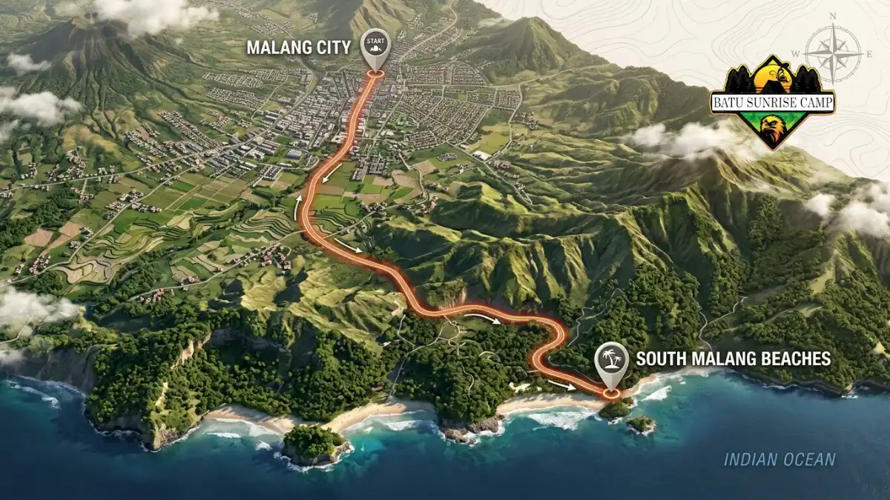

Rute ke pantai Malang Selatan untuk camping umumnya lewat Turen dan Dampit menuju Sendang Biru, atau lewat Kepanjen menuju Bantur dan Balekambang.
- Ada dua koridor utama dari Kota Malang: sisi timur lewat Turen dan Dampit, serta sisi barat lewat Kepanjen.
- Jarak ke pantai populer berkisar sekitar 63 sampai 72 km dari pusat Kota Malang, dengan waktu tempuh sekitar dua jam atau lebih.
- BPS Kabupaten Malang mencatat 5.002.852 kunjungan wisatawan pada 2025, sehingga jalur wisata cenderung padat saat libur.
- Berangkat pagi dan tiba sebelum sore memberi waktu mendirikan tenda dengan aman.
Jalur mana yang paling umum menuju pantai Malang Selatan?
Dua jalur paling umum menuju pantai Malang Selatan adalah koridor timur lewat Turen dan Dampit, serta koridor barat lewat Kepanjen menuju Bantur dan Donomulyo.
Koridor timur dipakai untuk menuju Sendang Biru dan pantai-pantai di sekitarnya. Dari Kota Malang, pengemudi mengikuti arah Turen dan Dampit, lalu mencari penunjuk arah wisata.
Di titik tertentu terdapat persimpangan: satu arah menuju Sendang Biru dan arah lain menuju Balekambang. Dari kawasan Sendang Biru, pengunjung dapat melanjutkan ke Bajul Mati, Ungapan, dan Goa Cina yang letaknya berdekatan.
Koridor barat melewati Kepanjen dan terus ke selatan. Rute ini lazim dipakai untuk menuju Pantai Balekambang di Kecamatan Bantur dan Pantai Ngliyep di Kecamatan Donomulyo. Menurut penelitian akademik, Balekambang berjarak sekitar 30 km di selatan Kepanjen.
Jalur Lintas Selatan (JLS) menghubungkan banyak pantai di pesisir selatan, sehingga pengunjung dapat berpindah dari satu pantai ke pantai lain tanpa kembali ke kota. Kemudahan inilah yang ikut mendorong naiknya minat camping pantai.
Berapa jarak dan waktu tempuh ke tiap pantai?
Jarak dari pusat Kota Malang ke pantai Malang Selatan sekitar 63 sampai 72 km, dengan waktu tempuh umumnya dua jam atau lebih tergantung lalu lintas.
Angka berikut dikumpulkan dari pemberitaan dan publikasi akademik. Waktu tempuh nyata dapat lebih lama saat akhir pekan, hujan, atau libur panjang.
| Pantai | Kecamatan atau Desa | Perkiraan Jarak dari Pusat Kota Malang |
|---|---|---|
| Ngliyep | Desa Kedungsalam, Donomulyo | Sekitar 63 km |
| Balekambang | Desa Srigonco, Bantur | Sekitar 67 km |
| Bajul Mati | Dekat persimpangan Sendang Biru | Sekitar 72 km |
| Goa Cina | Desa Sitiarjo, Sumbermanjing Wetan | Sekitar 2 jam perjalanan |
Gunakan tabel ini sebagai acuan awal. Untuk estimasi paling akurat, cek aplikasi peta pada hari keberangkatan karena kondisi jalan berubah-ubah.

Peta gambaran koridor perjalanan dari pusat Kota Malang menuju deretan pantai di pesisir Malang Selatan.
Bagaimana kondisi jalan dan kendaraan apa yang cocok?
Jalan menuju pantai Malang Selatan dapat dilalui motor dan mobil, tetapi ada tanjakan, tikungan, dan permukaan licin saat hujan sehingga kendaraan harus prima.
Rute pegunungan menuju pesisir selatan memiliki jalan berliku. Sebuah penelitian tentang Sendang Biru mencatat bahwa jalur ke sana menjadi sedikit berbahaya saat musim hujan karena licin dan banyak tikungan. Karena itu, periksa rem, ban, lampu, dan tekanan angin sebelum berangkat.
Mobil keluarga dan motor sama-sama bisa digunakan, tetapi barang bawaan camping lebih mudah dibawa dengan mobil.
Pengendara motor perlu mengikat tenda dan kantong tidur dengan kuat, serta membawa jas hujan. Isi bahan bakar penuh di kota besar sebelum memasuki jalur pesisir, karena SPBU semakin jarang saat mendekati pantai.
Sinyal ponsel dapat melemah di beberapa titik. Unduh peta offline dan simpan nomor pengelola pantai sebelum berangkat.
Kapan sebaiknya berangkat agar terhindar dari keramaian?
Berangkat pagi membantu Anda menghindari kepadatan, karena kunjungan wisata ke pantai Malang Selatan melonjak saat libur panjang dan akhir pekan.
BPS Kabupaten Malang mencatat total kunjungan wisatawan sebanyak 5.002.852 orang sepanjang 2025, dengan lebih dari 99 persen wisatawan nusantara, seperti dilaporkan dalam data BPS Kabupaten Malang tahun 2025.
Polres Malang juga melaporkan ribuan wisatawan memadati pantai selatan dari Balekambang hingga Banyu Meneng pada long weekend awal September 2025, sebagaimana dimuat dalam laporan keramaian long weekend pantai Malang Selatan.
Pola ini berarti jalan menuju pantai dapat padat pada hari libur nasional. Jika memungkinkan, pilih tanggal di luar libur panjang.
Berangkat sekitar pagi hari memberi waktu cadangan untuk istirahat, mengisi bahan bakar, dan mendirikan tenda sebelum gelap.
Apa yang perlu disiapkan sebelum berangkat?
Sebelum berangkat, siapkan peta offline, cek cuaca dan gelombang, isi bahan bakar, bawa uang tunai, dan konfirmasi aturan menginap serta tarif ke pengelola pantai tujuan.
Pertama, cek prakiraan cuaca dan gelombang dari BMKG untuk kawasan Samudra Hindia selatan Jawa Timur. Panduan keselamatan camping di pantai Malang Selatan menjelaskan cara membaca peringatan tersebut.
Kedua, siapkan anggaran. Rincian tiket masuk, tarif menginap di tenda, dan biaya parkir perlu diperhitungkan secara matang.
Ketiga, bawa uang tunai pecahan kecil. Tidak semua pengelola pantai menerima pembayaran nontunai.
Keempat, bagikan rencana perjalanan Anda kepada kerabat, termasuk lokasi pantai dan perkiraan jam pulang.
Bagaimana menyusun rute untuk beberapa pantai sekaligus?
Pantai Goa Cina, Ungapan, dan Bajul Mati berdekatan, sedangkan Balekambang dan Ngliyep berada di koridor barat, sehingga rute sebaiknya dikelompokkan menurut koridor agar perjalanan efisien.
Untuk kelompok timur, mulailah dari kawasan Sendang Biru, lalu bergerak ke Bajul Mati, Ungapan, dan Goa Cina dalam satu hari. Ketiga pantai ini berada pada rute yang sama sehingga tidak perlu memutar jauh.
Untuk kelompok barat, kombinasikan Balekambang dan pantai sekitarnya di Kecamatan Bantur. Pengelola Pantai 3 in 1 Bantur menyatakan satu tiket masuk dapat dipakai untuk tiga pantai, sehingga kunjungan beberapa pantai di satu kawasan bisa lebih hemat.
Jangan memadatkan terlalu banyak pantai dalam satu hari. Dua pantai dan satu malam camping sudah cukup untuk rute yang nyaman dan aman.
Kesimpulan
Pilih koridor sesuai tujuan: lewat Turen dan Dampit untuk Sendang Biru dan sekitarnya, atau lewat Kepanjen untuk Balekambang dan Ngliyep. Berangkat pagi, siapkan peta offline, dan cek cuaca BMKG. Untuk memilih pantai yang tepat, baca panduan utama lokasi pantai Malang Selatan untuk camping.

Pertanyaan yang Sering Diajukan (FAQ)
Perjalanan dari Kota Malang ke pantai selatan umumnya memakan waktu sekitar dua jam atau lebih, tergantung tujuan, lalu lintas, dan cuaca. Goa Cina, misalnya, dilaporkan sekitar dua jam. Hitung waktu cadangan pada akhir pekan dan libur panjang.
Motor dapat digunakan untuk menuju pantai Malang Selatan selama kondisi kendaraan prima dan pengendara siap menghadapi tanjakan serta tikungan. Ikat perlengkapan dengan kuat, bawa jas hujan, dan hindari berkendara malam hari di jalur yang belum dikenal.
Pengendara dapat memilih koridor lain, misalnya beralih dari koridor timur ke koridor barat lewat Kepanjen, atau berangkat lebih pagi. Pantau aplikasi peta untuk kondisi lalu lintas terbaru dan pertimbangkan menunda perjalanan saat libur panjang.